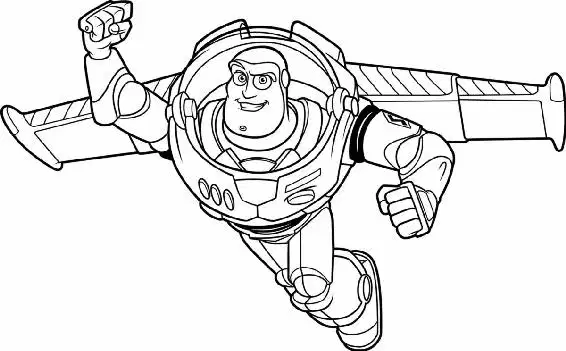

The next morning, Woody woke up stiff and sore. Darkness surrounded him. For a moment he couldn’t remember where he was.
Then it all came back to him. Andy’s room— which had been decorated with cowboy posters and drawings, even a cowboy bedspread, for as long as Woody could remember—was now full of space ranger decorations. Andy had new space ranger pajamas to replace his old cowboy pajamas. He clearly had a new favorite toy— Buzz. Even the other toys seemed to like Buzz better than Woody!
But worst of all, Andy had chosen Buzz over Woody at bedtime, which meant that Buzz got to sleep tucked under the covers next to Andy, while Woody had to do something he had never done before: sleep in the toy chest. He’d always slept in Andy’s bed before Buzz came along!
Woody pushed up the lid of the toy chest and peeked out. All clear. He took a deep breath of fresh air. When he reached up to adjust his hat, he discovered it was missing.
A rubber shark popped up from the chest behind him, wearing Woody’s hat.
“Look! I’m Woody! Howdy, howdy, howdy!” the shark shouted.
“Give me that!” Woody grabbed his hat and jammed it onto his head. He leaped out of the toy chest and slammed the lid.
Across the room, Buzz was already up, surrounded by adoring fans. No wonder he looked so good—he had slept in Andy’s bed!
“It looks as though I’ve been accepted into your culture,” Buzz told Rex and Slinky. Buzz raised his foot so they could see the sole of his shiny white space boot. The name ANDY was neatly printed in bold letters with a permanent marker. “Your chief, Andy, inscribed his name on me.”
Woody gulped. He bent over and looked at the bottom of his worn, dusty cowboy boot. ANDY was written there, too, but in a childish scrawl. And the letters had begun to fade.
“Don’t let it get to you, Woody,” a gentle voice said. Woody quickly dropped his foot and looked up.
Bo Peep was smiling at him—something that usually made his heart do cartwheels. But today her smile looked different somehow. Today it was tinged with pity.
“Uh,” Woody said, smiling back and trying to act nonchalant, “what do you mean? Who?”
“I know Andy’s excited about Buzz,” Bo Peep said. “But you know he’ll always have a special place for you.”
“Yeah,” Mr. Potato Head cracked as he sauntered past. “Like the attic.”
“All right! That’s it!” Woody growled. He’d had enough of being pushed around and shoved aside. It was time to deal with this trespasser head-on.
Buzz Lightyear had his cardboard box “spaceship” up on blocks. He lay on a skateboard, then rolled himself under the box to do repairs. Snake and Robot hovered nearby, eager to be of service to their new hero.
But Woody stepped between them and pulled Buzz out from under the box. He glared into the surprised spaceman’s face. “Listen, Lightsnack. You stay away from Andy. He’s mine, and no one is taking him away from me.”
“What are you talking about?” Buzz shook his head impatiently, then rolled himself back under the spaceship box.
Woody hauled him out again. “And another thing. Stop with this ‘spaceman’ thing. It’s getting on my nerves.”
Buzz sighed irritably and stood up. “Are you saying you want to lodge a complaint with Star Command?”
“Okay, so you want to do it the hard way, huh?” replied Woody.
“Don’t even think about it, cowboy,” said Buzz.
“Oh, yeah, tough guy?” Woody shot back.
Woody poked Buzz in the chest—and accidentally jabbed a green button. Buzz’s helmet whooshed open.
“AAGGGHHH!” Buzz clutched his throat, gasping for air. He dropped to his knees, then toppled onto his side, writhing on the ground and holding his breath. The robot and Slinky looked at each other nervously. Woody just rolled his eyes.
Finally, Buzz was forced to suck in a huge rasping breath. He waited a moment. He blinked. He sniffed. Then he exhaled. Nothing happened.
Buzz seemed stunned. “The air isn’t toxic!” he exclaimed.
Then he turned on Woody. “How dare you open a spaceman’s helmet on an uncharted planet! My eyeballs could have been sucked from their sockets!” Glaring, he whooshed his helmet closed.
“You actually think you’re the Buzz Lightyear?” Woody said. Buzz just sniffed, as if insulted. “Oh, all this time I thought it was an act!” Woody continued. He turned to the other toys, who were gathering around. “Hey, guys! Look!” he said sarcastically. “It’s the real Buzz Lightyear!”
Buzz cleared his throat, then blinked a couple of times. “You’re mocking me, aren’t you?”
Woody guffawed. “Oh, no, no, no.” Then, staring over Buzz’s shoulder, he twisted his face in horror and said, “Buzz, look! An alien!” Buzz whirled around. “Where?” Woody clutched his stomach and fell over with laughter.
Suddenly, a dog barked. Woody’s laughter died in his throat. All the toys froze and looked at the bedroom window, through which a cackle floated in from outside.
“It’s Sid!” Slinky whispered.
Rex looked frightened. “I thought he was at summer camp.”
“They must have kicked him out early this year,” Hamm grumbled.
Buzz watched, confused, as the toys crept toward the window.
“Who is it this time?” Mr. Potato Head asked. Woody pulled himself up on the windowsill and shook his head. “I can’t tell. Where’s Lenny?”
A set of windup binoculars waddled over. Woody picked up the toy and looked through him to survey the scene.
A boy was playing in his junk-filled backyard. He wore a torn black T-shirt emblazoned with a skull and crossbones. His mangy dog was digging holes.
This boy was not like Andy. There was something mean about him. Something cruel. He was taunting a miserable-looking toy soldier as he strapped a huge M-80 firecracker onto the soldier’s back with masking tape. The boy laughed as he lit the fuse.
“Oh, no,” Woody moaned, “it’s a Combat Carl.”
Buzz broke through the crowd and made his way to the windowsill. “What’s going on?”
“Nothing that concerns you spacemen,” Woody said. “Just us toys.”
“I’d better take a look anyway.” Buzz snatched Lenny from Woody’s hands and glanced around. Then his mouth fell open. “Why is that soldier strapped to an explosive device?” Woody steered the binoculars till Buzz could see the boy. “That’s why—Sid.”
“You mean that happy child?” asked Buzz.
“That ain’t no happy child,” Mr. Potato Head snapped.
“He tortures toys,” Rex said, “just for fun.”
“Well, then, we’ve got to do something.” Buzz stepped onto the window ledge.
“What are you doing?” Bo Peep exclaimed, grabbing his arm. “Get down from there!”
Buzz pulled away. “I’m going to teach that boy a lesson!”
“Yeah, sure,” Woody mocked. “You go ahead. Melt him with your scary laser.” He poked at Buzz’s control panel, making it beep.
“Be careful with that!” Buzz said. “It’s extremely dangerous.”
Lenny saw that the fuse on Sid’s explosive had almost burned down. “Hit the dirt!” he cried. The toys scattered, shrieking.
BOOM! BA-BA-BOOM!Woody and Buzz were thrown to the floor. They could hear bits and pieces of toy shrapnel pelting the side of Andy’s house. Then they heard Sid laughing.
“Yes! He’s gone! He’s history!” shouted Sid from below.
Slowly, the toys rose from their hiding places and crept back to the window. Sid was jumping around the yard happily while Scud the dog barked and strained against the rope that kept him tethered to the back shed. All that was left of the Combat Carl was a smoky black smudge on the dirt. The toys cringed and turned away.
“I could have stopped him,” Buzz said quietly.
“Buzz, I would love to see you try,” Woody replied. “Of course, I’d love to see you as a crater.”
But it was Bo Peep who spoke for them all. “The sooner we move, the better.”
